Ink & Tone
Learn Chinese one word at a time, on your lock screen, home screen and Apple Watch.
On the App Store from 6 February 2027
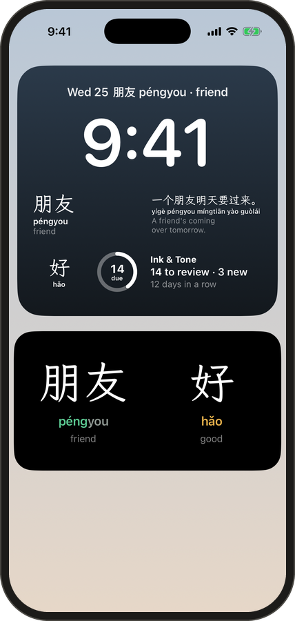
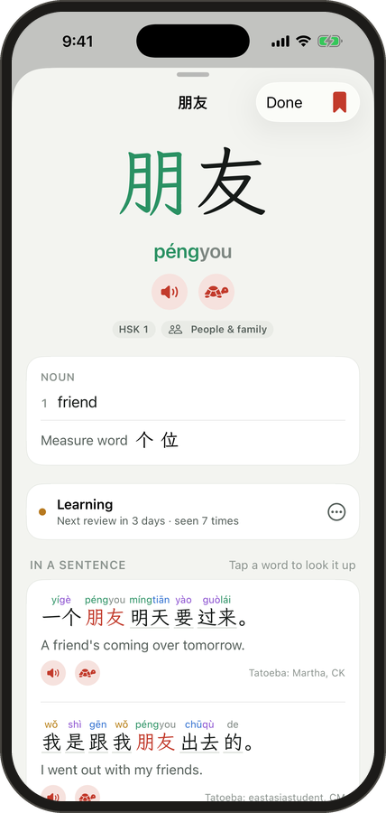
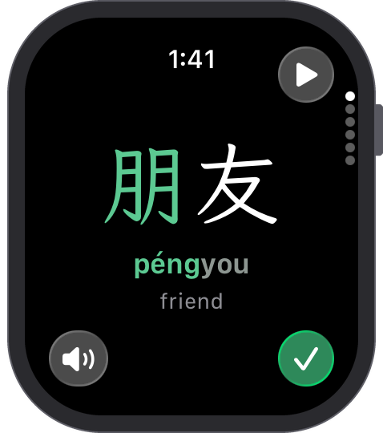
A word wherever you look
The word you are learning sits on your lock screen, home screen and watch face, so you see it dozens of times a day without opening anything. Put the Sentence widget next to it to see how the word is used.
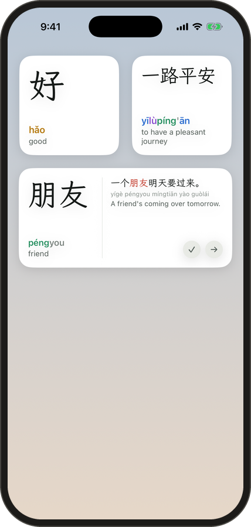
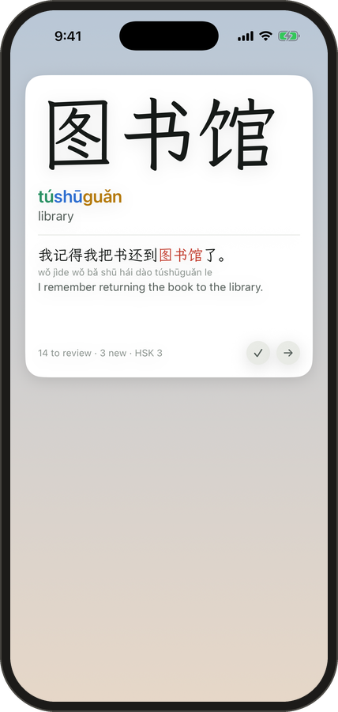
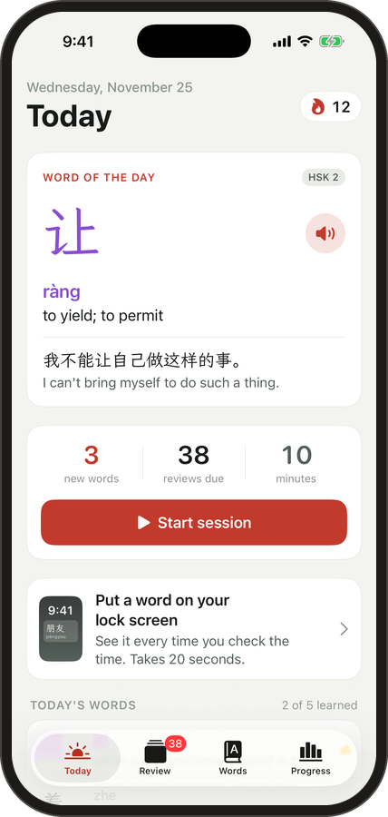
Short sessions that stick
Each session mixes meaning, listening, tones and handwriting. A spaced repetition scheduler (FSRS) brings every word back just before you would forget it.
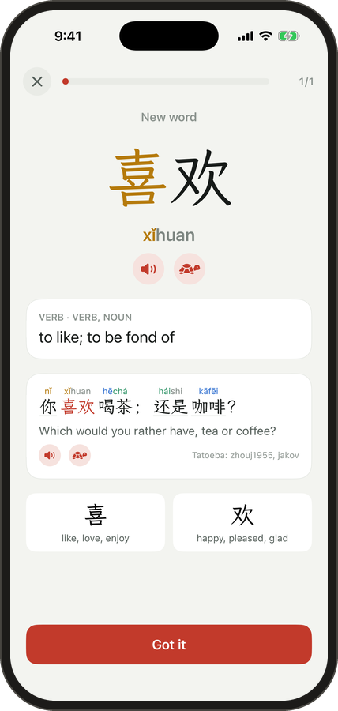
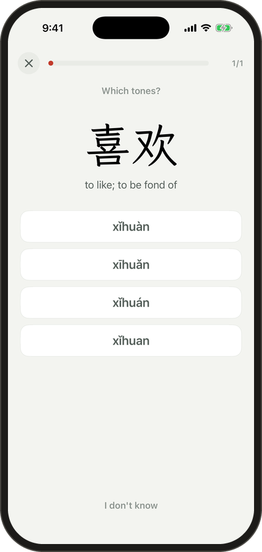
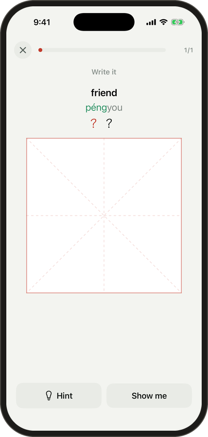
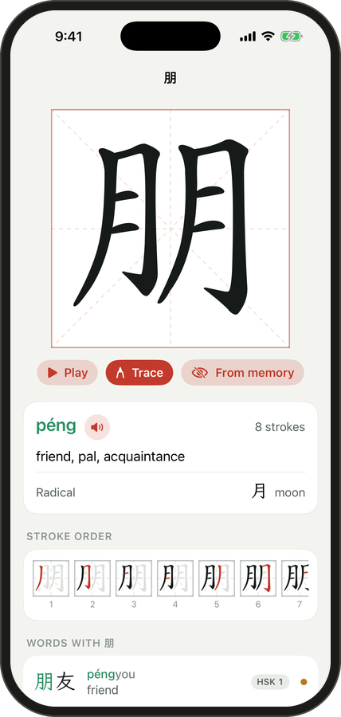
See the tones
Each tone has its own colour, so you can see the tones as well as hear them.
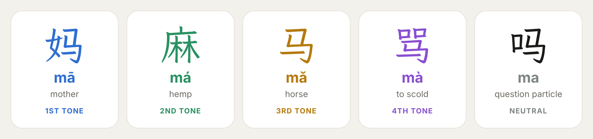
On your wrist
Today's words on the watch face, quick reviews, and the whole screen as your page for writing.
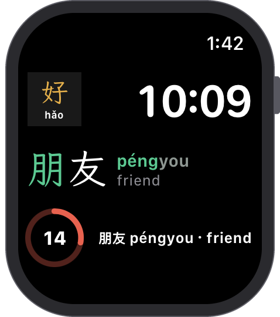
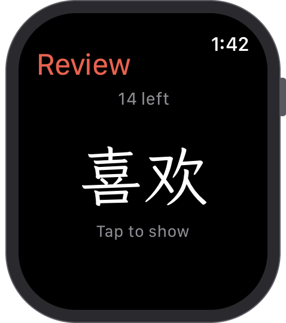
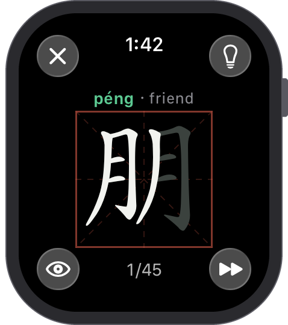
Free to start
Free
No account, no ads
- HSK 1 and 2 in every word list
- Every kind of question, stroke order and handwriting
- Word and Today widgets for the lock screen and home screen
- Progress, streaks, reminders and backups
Pro
€14.99 a year with a free first week, or €29.99 once. Local prices in other countries.
- Every HSK level, from 3 to 7–9
- The Sentence widget and the bigger home screen widgets
- The Apple Watch app and its reviews complication
Private by design
Ink & Tone works offline and collects nothing. There is no account, no advertising and no tracking, and your progress stays on your devices. Read the privacy policy, or see where the words and sentences come from.